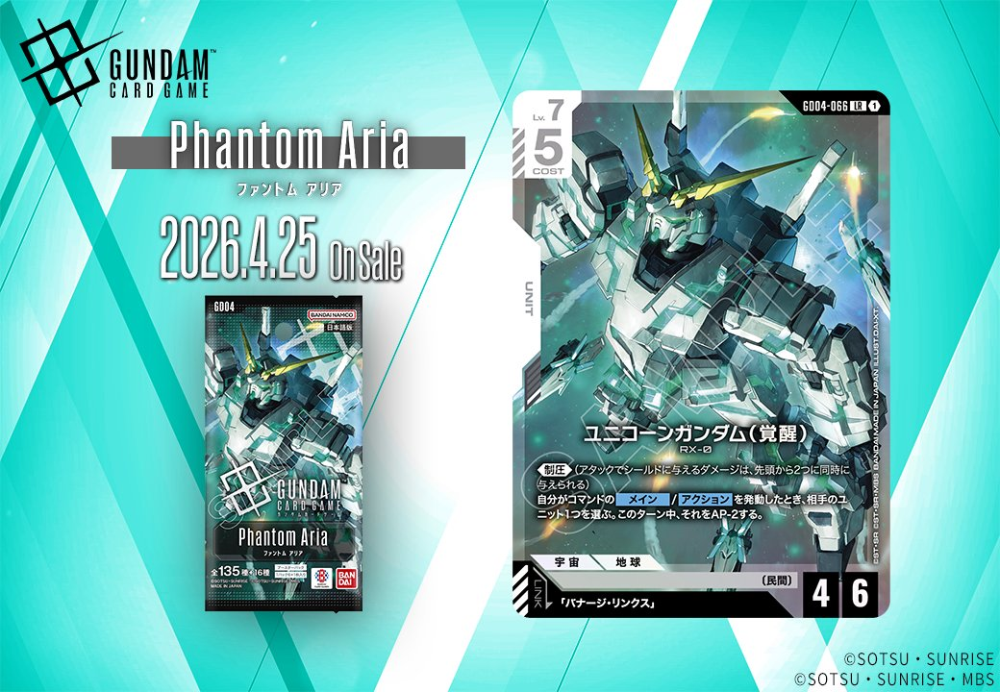
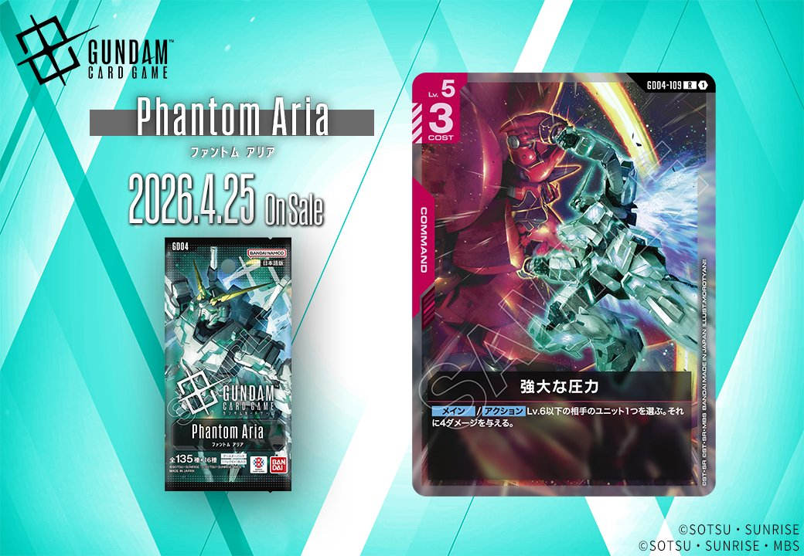
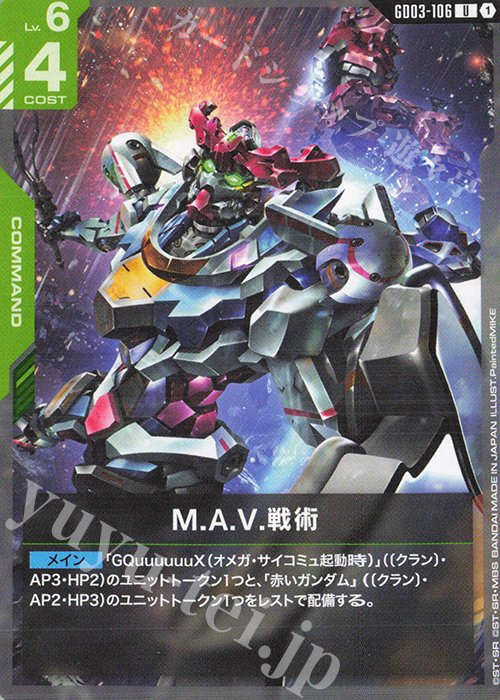

GD04 Phantom Ariaから新カード3枚が公開されました。白ユニットのユニコーンガンダム（覚醒）は《制圧》とコマンド連動のAP低下効果を持ち、赤コマンドの強大な圧力はLv.6以下への4ダメージ除去、赤ユニットのネオ・ジオングは〔ネオ・ジオン〕デッキのキーカードとして配備時3ダメージと特徴付与を持ちます。

ユニコーンガンダム（覚醒） (GD04-066)
| 色 | 白 | タイプ | UNIT |
| Lv | 7 | コスト | 5 |
| AP | 4 | HP | 6 |
| 特徴 | 民間 | ||
| リンク条件 | バナージ・リンクス | ||
効果: 《制圧》(アタックでシールドに与えるダメージは、先頭から2つに同時に与えられる) 自分がコマンドのメイン/アクションを発動したとき、相手のユニット1つを選ぶ。このターン中、それをAP-2する。
Lv7/コスト5の白色ユニットで、《制圧》を持つため相手のシールドエリアの先頭2枚に同時にダメージを与えられる。さらにコマンドのメイン/アクションを発動するたびに相手ユニット1つのAPを-2する継続的なデバフ効果を持ち、コマンドカードを多用するデッキで特に威力を発揮する。リンク条件の「バナージ・リンクス」とリンクすれば配備ターンからアタック可能となるため、《制圧》による速攻が狙える強力なフィニッシャー候補。


強大な圧力 (GD04-109)
| 色 | 赤 | タイプ | COMMAND |
| Lv | 5 | コスト | 3 |
効果: 【メイン】/【アクション】 Lv.6以下の相手ユニット1つを選ぶ。それに4ダメージを与える。
Lv5/コスト3の赤コマンドで、【メイン】と【アクション】の両タイミングで使用可能。Lv.6以下の相手ユニットに4ダメージを与える除去コマンドとして、HP4以下の中型ユニットを一撃で処理できる。アクションタイミングでも発動可能なため、相手のアタック宣言後にブロッカー前のユニットを除去するなど、戦闘中の不意打ちとしても機能する汎用性の高い1枚。

ネオ・ジオング (GD04-033)
| 色 | 赤 | タイプ | UNIT |
| Lv | 9 | コスト | 8 |
| AP | 6 | HP | 7 |
| 特徴 | ネオ・ジオン | ||
| リンク条件 | フル・フロンタル | ||
効果: このユニットか、〔ネオ・ジオン〕の自分ユニットが配備されたとき、相手のユニット1つを選ぶ。それに3ダメージを与える。【リンク中】自分ユニットすべては〔ネオ・ジオン〕を得る。
Lv9/コスト8のAP6/HP7という最高クラスのステータスを持つ赤ユニット。自身または〔ネオ・ジオン〕ユニットが配備されるたびに相手ユニットに3ダメージを与える誘発効果を持ち、展開するだけで盤面を制圧できる。【リンク中】は全ユニットに〔ネオ・ジオン〕の特徴を付与するため、非ネオ・ジオンのユニットでも配備トリガーの対象となり、3ダメージの発動機会が大幅に増加する。フル・フロンタルとのリンクを前提とした〔ネオ・ジオン〕デッキのエースとして機能するカード。


関連カード
-
 溢れる慈愛(GD01-118)白系デッキ内採用率38.2% (360デッキ)
溢れる慈愛(GD01-118)白系デッキ内採用率38.2% (360デッキ) -
 ガンダム・ルブリス(GD01-086)白系デッキ内採用率37.8% (356デッキ)
ガンダム・ルブリス(GD01-086)白系デッキ内採用率37.8% (356デッキ) -
 エールストライクガンダム(ST04-001)白系デッキ内採用率37.4% (352デッキ)
エールストライクガンダム(ST04-001)白系デッキ内採用率37.4% (352デッキ) -
 格闘戦(ST03-013)赤系デッキ内採用率25.8% (243デッキ)
格闘戦(ST03-013)赤系デッキ内採用率25.8% (243デッキ) -
 GQuuuuuuX（オメガ・サイコミュ起動時）(GD03-034)赤系デッキ内採用率23.6% (222デッキ)
GQuuuuuuX（オメガ・サイコミュ起動時）(GD03-034)赤系デッキ内採用率23.6% (222デッキ) -
 戦技の向上(GD03-109)赤系デッキ内採用率21.3% (201デッキ)
戦技の向上(GD03-109)赤系デッキ内採用率21.3% (201デッキ)